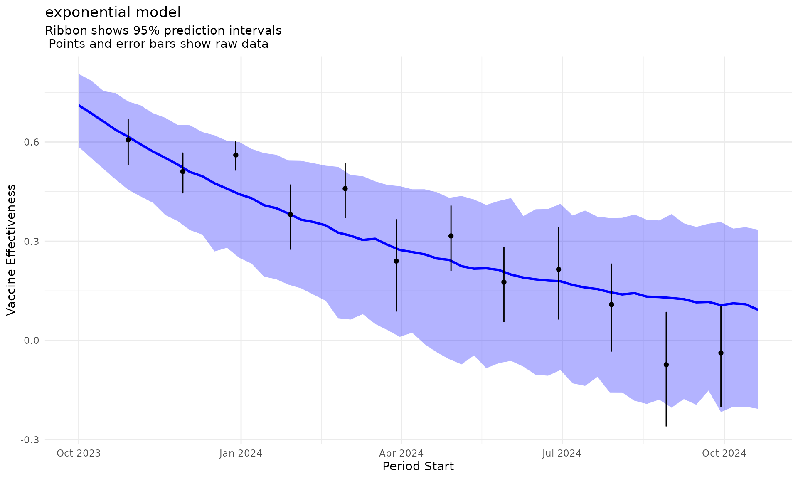

Interpolate monthly data to weekly data
interpolate_monthly_data_to_weekly_data.RmdIntroduction
This vignette demonstrates an approach to interpolate weekly data from 8-week data for vaccine effectiveness using the following approach:
- Generate many (e.g 1000) 8-week VE samples from random normal distribution with mean and standard deviation of the 8-week VE on the log HR scale
- Fit the model to the 1000 8-week VE samples and store the fitted values as well as the standard deviation of the residuals
- Add some noise to the fitted values using the standard deviation of the residuals to get the weekly VE samples
Sample Data
We use a toy dataset provided in the package, containing 8-weeks estimates of vaccine effectiveness (VE) for 12 months.
data("sample_8_weeks_data")
head(sample_8_weeks_data)
#> date_min date_max estimate CIlow CIhigh
#> 1 2023-10-01 2023-11-25 0.3933690 0.3295481 0.4695496
#> 2 2023-11-01 2023-12-26 0.4893167 0.4321941 0.5539892
#> 3 2023-12-01 2024-01-25 0.4392504 0.3965828 0.4865086
#> 4 2024-01-01 2024-02-25 0.6192837 0.5287789 0.7252791
#> 5 2024-02-01 2024-03-27 0.5407841 0.4644212 0.6297030
#> 6 2024-03-01 2024-04-25 0.7600000 0.6337632 0.9113814
ggplot(sample_8_weeks_data, aes(x = date_min, y = 1 - estimate)) +
geom_point() +
geom_errorbar(aes(ymin = 1 - CIhigh, ymax = 1 - CIlow)) +
theme_minimal() +
labs(x = "Date", y = "Vaccine Effectiveness")
Creating Individual Decay Models
seed_to_use <- 666Exponential Decay Model
# Create exponential model using the R6 class
exponential_model <- DecayModel$new(
name = "exponential",
decay_function = exponential_decay(),
param_config = list(
start = c(VE0 = 0.7, decay_rate = 0.1),
lower = c(0.01, 0.001),
upper = c(0.99, 1.0),
names = c("VE0", "decay_rate")
)
)
exponential_result <- exponential_model$fit_to_determine_bic(
estimate = sample_8_weeks_data$estimate,
ci_low = sample_8_weeks_data$CIlow,
ci_up = sample_8_weeks_data$CIhigh,
periods_starts = sample_8_weeks_data$date_min,
periods_ends = sample_8_weeks_data$date_max,
seed = seed_to_use
)#> Exponential Model Results:
#> Coefficients: VE0 = 0.7309, decay_rate = 0.0363
#> BIC: -13.85595Logistic Decay Model
# Create logistic model using the R6 class
logistic_model <- DecayModel$new(
name = "logistic",
decay_function = logistic_decay(),
param_config = list(
start = c(VE0 = 0.7, decay_rate = 0.1, constant = 0.5),
lower = c(0.01, 0.001, 0.01),
upper = c(0.99, 1.0, 2.0),
names = c("VE0", "decay_rate", "constant")
)
)
logistic_result <- logistic_model$fit_to_determine_bic(
estimate = sample_8_weeks_data$estimate,
ci_low = sample_8_weeks_data$CIlow,
ci_up = sample_8_weeks_data$CIhigh,
periods_starts = sample_8_weeks_data$date_min,
periods_ends = sample_8_weeks_data$date_max,
seed = seed_to_use
)#> Logistic Model Results:
#> Coefficients: VE0 = 0.6583, decay_rate = 0.1007, constant = 0.078
#> BIC: -12.469Visualizing Individual Models
# Plot exponential model
p1 <- exponential_model$plot_optimal(
estimate = sample_8_weeks_data$estimate,
ci_low = sample_8_weeks_data$CIlow,
ci_up = sample_8_weeks_data$CIhigh,
periods_starts = sample_8_weeks_data$date_min,
periods_ends = sample_8_weeks_data$date_max,
title = "Exponential Decay Model (3-Step)",
color = "red",
age_group = "65-79",
site = "Somewhere",
season = "2023-2024",
outcome = "Some outcome"
)
# Plot logistic model
p2 <- logistic_model$plot_optimal(
estimate = sample_8_weeks_data$estimate,
ci_low = sample_8_weeks_data$CIlow,
ci_up = sample_8_weeks_data$CIhigh,
periods_starts = sample_8_weeks_data$date_min,
periods_ends = sample_8_weeks_data$date_max,
title = "Logistic Decay Model (3-Step)",
color = "blue",
age_group = "65-79",
site = "Somewhere",
season = "2023-2024",
outcome = "Some outcome"
)
grid.arrange(p1, p2, ncol = 2)
Comparing multiple models at once
comparison_result <- compare_decay_models(
model_names = c("exponential", "logistic"),
estimate = sample_8_weeks_data$estimate,
ci_low = sample_8_weeks_data$CIlow,
ci_up = sample_8_weeks_data$CIhigh,
periods_starts = sample_8_weeks_data$date_min,
periods_ends = sample_8_weeks_data$date_max,
seed = seed_to_use
)
# View comparison results
cat("Model Comparison Summary:\n")
#> Model Comparison Summary:
print(comparison_result$summary)
#> model aic bic
#> 1 exponential -15.31067 -13.85595
#> 2 logistic -14.40862 -12.46900
# Find best model based on BIC
best_model_bic <- get_best_model(comparison_result, criterion = "bic")
cat("\nBest model based on BIC:", best_model_bic$model_name, "\n")
#>
#> Best model based on BIC: exponential
cat("Best BIC:", best_model_bic$criterion, "\n")
#> Best BIC: -13.85595Model Comparison Plot
# Create comparison plot using BIC criterion
comparison_plot <- plot_model_comparison(
comparison_result = comparison_result,
estimate = sample_8_weeks_data$estimate,
ci_low = sample_8_weeks_data$CIlow,
ci_up = sample_8_weeks_data$CIhigh,
periods_starts = sample_8_weeks_data$date_min,
periods_ends = sample_8_weeks_data$date_max,
criterion = "bic",
age_group = "65-79",
site = "Somewhere",
season = "2023-2024",
outcome = "Some outcome"
)
print(comparison_plot)
Generate many weekly VE samples with uncertainty from covariance matrix
The new generate_VE_based_on_boot_fit method allows us
to generate VE samples based on the bootstrap covariance matrix,
providing uncertainty quantification:
# Generate VE samples based on bootstrap fit
best_model <- best_model_bic
ve_samples <- best_model$model$generate_VE_based_on_resampling(
estimate = sample_8_weeks_data$estimate,
ci_low = sample_8_weeks_data$CIlow,
ci_up = sample_8_weeks_data$CIhigh,
periods_starts = sample_8_weeks_data$date_min,
periods_ends = sample_8_weeks_data$date_max,
n_weekly_ve_to_generate = 1000
)
print(best_model$model$nlrob_samples[[1]])
#> [1] 0.77130208 0.69606653 0.70383210 0.63670683 0.54326916 0.55777561
#> [7] 0.53599977 0.56982274 0.52326807 0.43053240 0.47479437 0.56936740
#> [13] 0.48932784 0.36392496 0.34836300 0.33403038 0.40833986 0.47538537
#> [19] 0.43720746 0.43838677 0.43170018 0.28671542 0.33456315 0.12828975
#> [25] 0.30538163 0.30120285 0.26630647 0.32640983 0.32174312 0.32557620
#> [31] 0.23751670 0.37776333 0.19777997 0.20998851 0.24222891 0.15442601
#> [37] 0.08419762 0.15652543 0.26590230 0.21824732 0.18995632 -0.04686583
#> [43] 0.14320589 0.10098649 0.15176734 0.13690023 0.23566475 0.17283280
#> [49] 0.12646978 -0.01102106 0.16354866 0.13250184 0.19858986 0.08922504
#> [55] 0.12740127 0.13706247Get summary of VE samples
ve_summary <- best_model$model$generate_VE_summary(
periods_starts = sample_8_weeks_data$date_min,
periods_ends = sample_8_weeks_data$date_max
)
print(ve_summary)
#> # A tibble: 56 × 6
#> period_start VE_median VE_mean VE_sd VE_quantile_025 VE_quantile_975
#> <date> <dbl> <dbl> <dbl> <dbl> <dbl>
#> 1 2023-10-01 0.711 0.706 0.0570 0.585 0.806
#> 2 2023-10-08 0.687 0.682 0.0565 0.552 0.786
#> 3 2023-10-15 0.662 0.656 0.0610 0.519 0.754
#> 4 2023-10-22 0.636 0.632 0.0649 0.486 0.747
#> 5 2023-10-29 0.616 0.609 0.0651 0.456 0.722
#> 6 2023-11-05 0.593 0.588 0.0690 0.436 0.711
#> 7 2023-11-12 0.571 0.568 0.0681 0.416 0.687
#> 8 2023-11-19 0.552 0.544 0.0753 0.379 0.673
#> 9 2023-11-26 0.532 0.528 0.0707 0.361 0.652
#> 10 2023-12-03 0.509 0.507 0.0783 0.334 0.651
#> # ℹ 46 more rowsVE with Uncertainty Bands
# Plot VE with uncertainty bands
uncertainty_plot <- best_model$model$plot_VE_with_uncertainty(
periods_starts = sample_8_weeks_data$date_min,
periods_ends = sample_8_weeks_data$date_max
)
print(uncertainty_plot)
VE with Uncertainty Bands plus raw data
ve_uncertainty_plot_plus_raw_data <- best_model$model$plot_VE_with_uncertainty_plus_raw_data(
estimate = sample_8_weeks_data$estimate,
ci_low = sample_8_weeks_data$CIlow,
ci_up = sample_8_weeks_data$CIhigh,
periods_starts = sample_8_weeks_data$date_min,
periods_ends = sample_8_weeks_data$date_max
)
print(ve_uncertainty_plot_plus_raw_data)